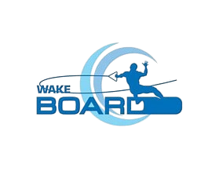

Wake
Boarding
Fun and Extreme
Wakeboarding is a thrilling water sport invented by Tony Finn — combining the rush of surfing with the freedom of the open water.
Discover More
Fun and Extreme
Wakeboarding is a thrilling water sport invented by Tony Finn — combining the rush of surfing with the freedom of the open water.
Discover More